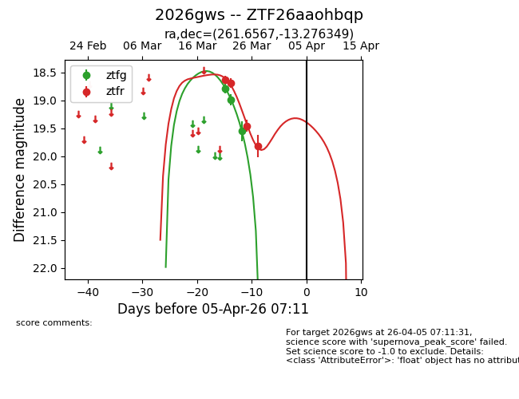
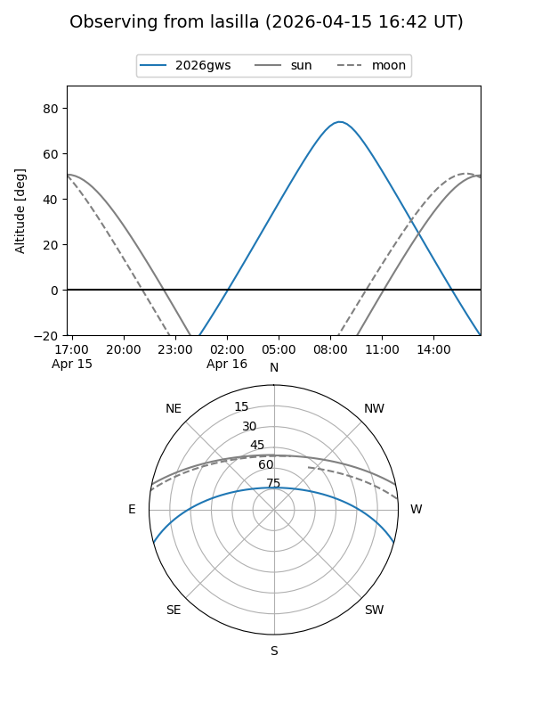
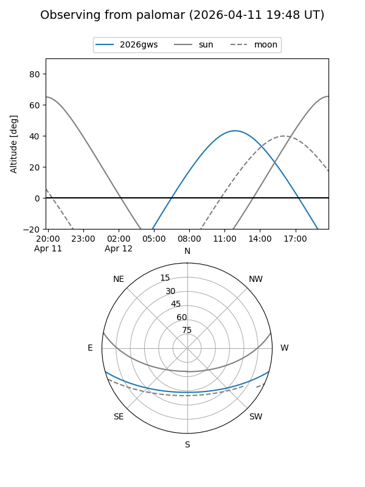
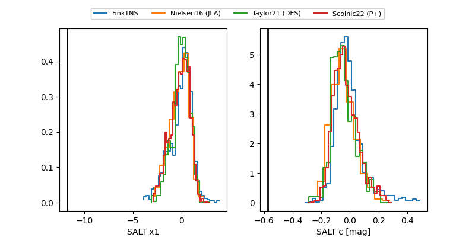

2026gws
Target 2026gws at 2026-04-05 07:14
Aliases and brokers:
FINK: link
Lasair: link
ALeRCE: link
TNS: link
YSE: link
alt names
ZTF26aaohbqp (ztf,fink_ztf)
2026gws (tns,yse)
Coordinates:
equatorial (ra, dec) = 261.6567,-13.27635
equatorial (HMS+DMS) = 17:26:37.62,-13:16:34.86
galactic (l, b) = (11.0252,+12.03813)
Flags:
Photometry:
last ztfg=19.55, ztfr=19.82
3 ztfg, 4 ztfr detections
Lightcurve

Visibility


Additional plots
